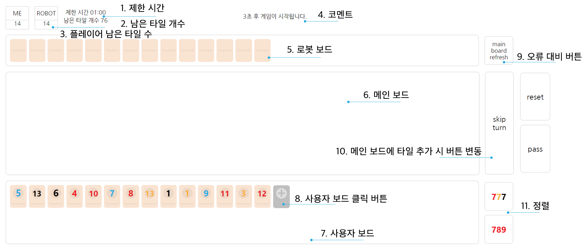

1. 사용자와 로봇이 타일을 14개씩 나누어 가집니다.
2. 사용자부터 시작하여 1분씩 메인 보드에 타일을 추가할 수 있습니다.
3. 자신의 타일을 모두 메인 보드에 추가하는 플레이어가 승자입니다.
루미큐브 온라인과는 다른 타일 추가 방법을 알려드리겠습니다.
플레이어 보드 → 메인 보드
1. 플레이어 타일에 타일을 한 개씩 클릭해주세요.
2. 타일들이 클릭된 상태에서 메인 보드를 클릭해주세요.
메인 보드 → 플레이어 보드
1. 플레이어 보드에 다시 추가할 타일을 한 개식 클릭해주세요.
2. 플레이어가 가진 타일 중 마지막 회색 버튼을 클릭하면 타일이 제자리로 돌아옵니다.

1. 제한 시간 : 한 턴당 주어진 시간은 1분으로, 1분을 카운트다운하여 남은 시간을 알려줍니다.
2. 남은 타일 개수 : 타일 더미에 남아있는 타일의 개수를 알려줍니다.
3. 플레이어의 남은 타일 개수 : 플레이어의 타일 수의 변화를 알려줍니다.
4. 코멘트 : 게임 시작 및 현재 누구의 턴인지 알려줍니다.
5. 로봇 보드 : 게임의 생동감을 위해 로봇 보드를 추가했습니다. 로봇 턴에서 로봇이 타일을 냈는지 먹었는지 알 수 있습니다.
6. 메인 보드 : 공용으로 사용하는 보드로, 조건에 맞는 타일 묶음을 내거나 자신의 타일과 메인 보드 타일을 재조합 할 수 있습니다.
7. 사용자 보드 : 사용자가 가지고 있는 타일을 보여주는 보드로, 자신의 턴에서 타일을 클릭하여 메인보드에 추가할 수 있습니다.
8. 사용자 보드 클릭 버튼 : 현재 턴에서 메인보드에 추가한 타일을 다시 가져올 때 사용하기 위한 버튼입니다.
9. 오류 대비 버튼 : 게임 진행 중 오류가 날 경우 버튼을 눌러주세요. 오류를 찾고 해결하여 다시 원활한 진행을 할 수 있도록 도와줍니다.
10. 메인보드에 타일 추가 시 버튼 변동 : 타일 추가 전 - 스킵 버튼으로, 메인 보드에 타일을 추가하지 못할 경우 타일을 한 개 먹습니다.
타일 추가 후 - 리셋 버튼과 패스 버튼으로, 보드를 이전 상태로 되돌리거나 추가한 타일 묶음의 조건이 만족할 경우 턴을 넘깁니다.
11. 정렬 버튼 : 777 - 타일을 오름차순으로 정렬합니다. 789 타일을 색깔별로 오름차순으로 정렬합니다.
